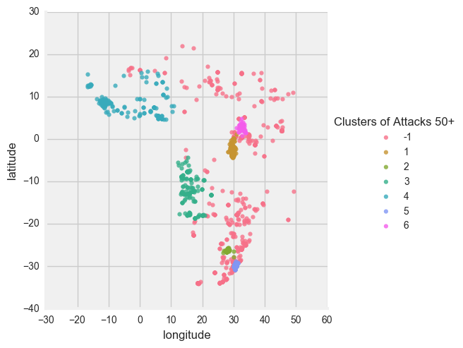

Clustering Geographic Data with HDBSCAN
Geographic data has a high explanatory value. Many can look at a map and know what each area represents. However, as data scientists we know all too well the difficulties with applying clustering techniques to data in a map layout.
At a high level, we want to.
- Cluster data points on a map into regions even if the density of the clusters vary, (i.e. rural vs. urban).
- Create clusters that are not required to follow a specific shape, (i.e. diameter of kmeans, or epsilon of DBSCAN).
By.
- Using HDBSCAN to account for these issues.
- HDBSCAN has a great tutorial here.
- They also have a tremendous overview of how their algorithm compares to other major ones here.
import pandas as pd
import seaborn as sns
import matplotlib.pyplot as plt
import hdbscan
plt.style.use('fivethirtyeight')
%matplotlib inline
Import the data.
# Load in the dataset.
df = pd.read_csv('../data/global_terrorism_sub_sahara.csv')
Run the algorithm.
It is tremendously straight forward.
# Separate out the geographic data.
df_attacks = df[['latitude', 'longitude']].copy()
#Instantiate the model and declare the min_sample size.
clusterer = hdbscan.HDBSCAN(min_samples=50)
#Fit to the target dataframe.
clusterer.fit(df_attacks)
HDBSCAN(algorithm='best', allow_single_cluster=False, alpha=1.0,
approx_min_span_tree=True, core_dist_n_jobs=4, gen_min_span_tree=False,
leaf_size=40, match_reference_implementation=False,
memory=Memory(cachedir=None), metric='euclidean', min_cluster_size=5,
min_samples=50, p=None)
Create cluster labels.
#Add a new column to the original dataframe that assigns each row to a cluster.
df['zone'] = clusterer.labels_
# Sometimes there are clusters that get caught with low data points.
# I am cleaning those here, but that is a small price to pay for what happens next.
df.zone.replace([1,11,7,2,13,8,6,5,4], -1, inplace=True)
# Renaming the cluster labels to something more meaningful
rename_dict = {-1:'-1', 9:'1', 12:'2', 3:'3', 0:'4', 14:'5', 10:'6'}
# Add a new column that will also serve as a title for the chart.
df['Clusters of Attacks 50+'] = df.zone.map(rename_dict)
Plot it.
# boom.
sns.lmplot(x='longitude', y='latitude', hue='Clusters of Attacks 50+', fit_reg=False, data=df)
<seaborn.axisgrid.FacetGrid at 0x111ed7c50>

NOTE:
- How the clusters don't follow a particular shape. Perfect for geographic data.
- That there is a cluster group called "-1" these are outliers and don't fall into a cluster which is a very handy feature for geographic data.
- Some clusters are really small and close together. Because densely packed data points, will cause the epsilon to become smaller which is perfect for splitting cities from suburban or rural regions.